Spatial Design
Hudson River Bench
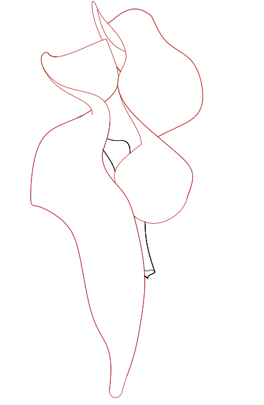
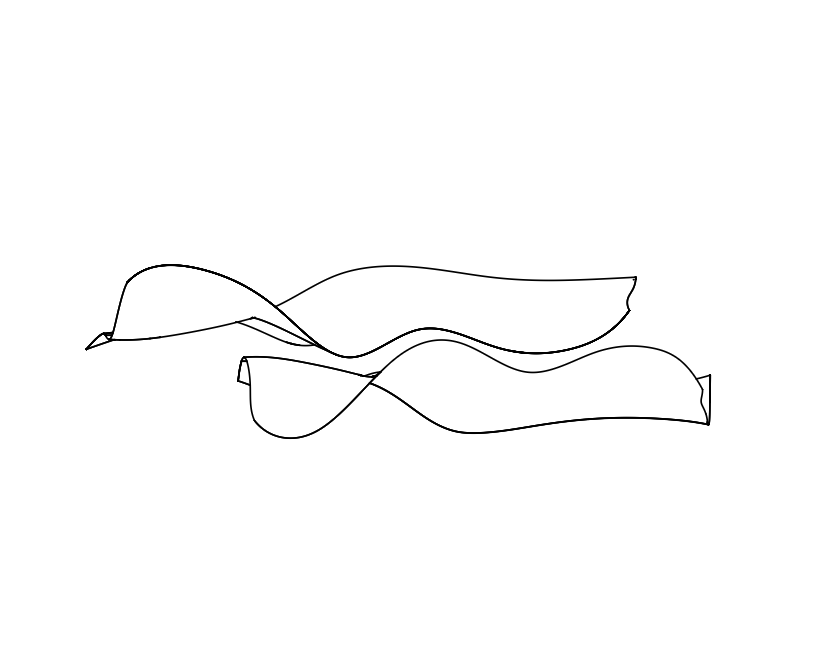
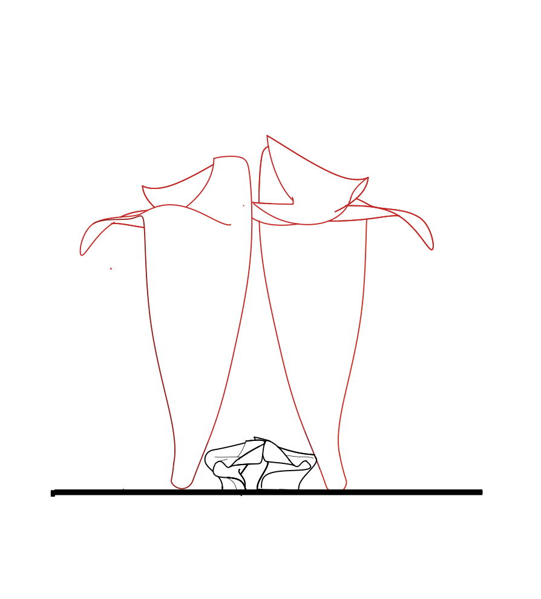
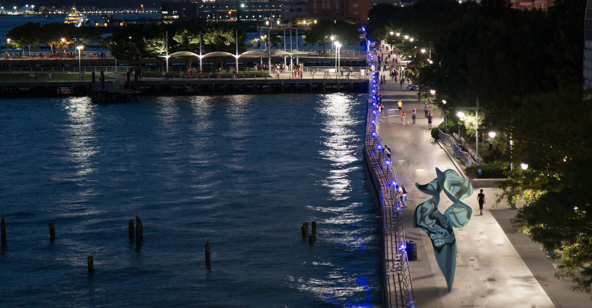
Renderings

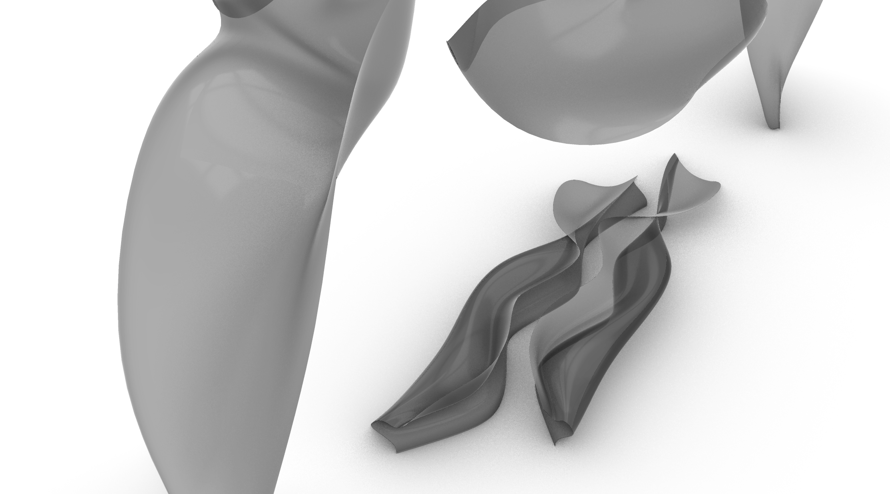
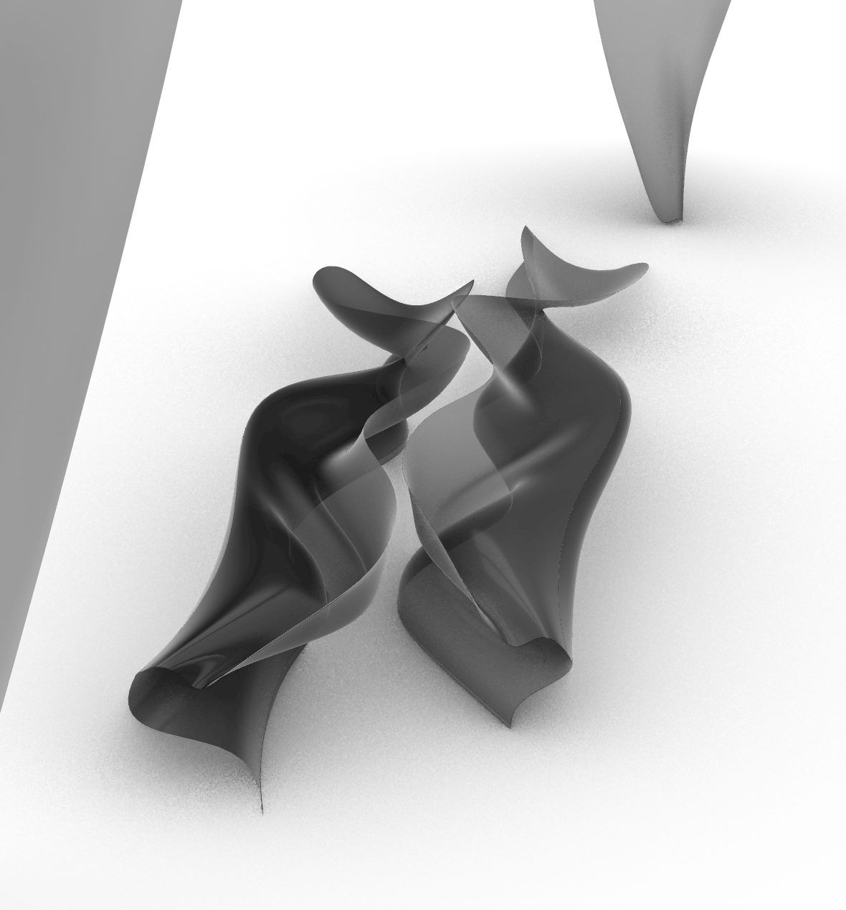
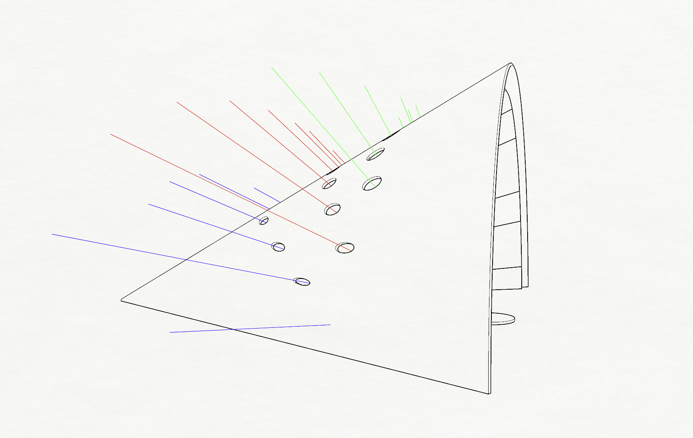
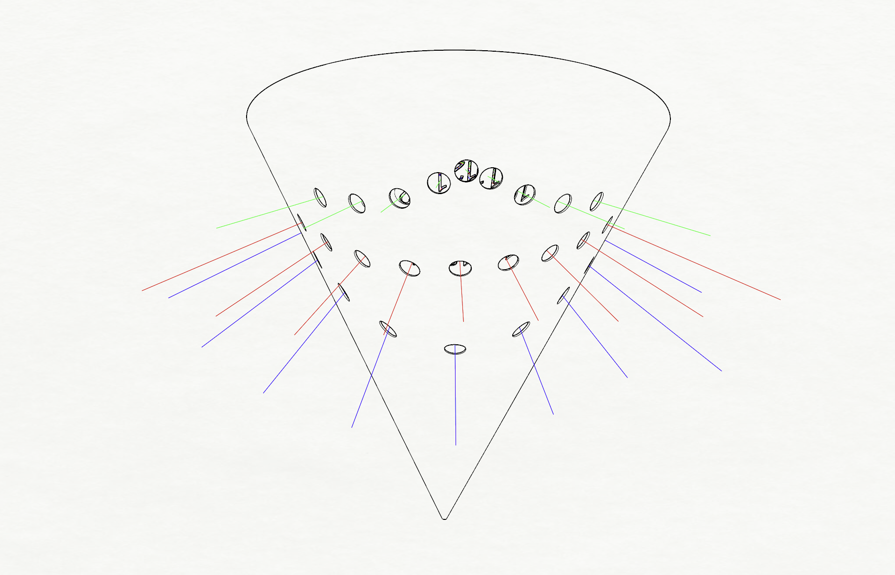
Sundial Design
A projecting sundial that filters sunlight through calibrated apertures and casts the hour onto a central platform.
It functions accurately on three days:
- Summer Solstice
- October 2nd (Project Critique Day)
- Winter Solstice
Designated for South Hadley, MA
Process:
- Studied the Sun’s Altitude and Azimuth on the chosen days.
- Placed apertures according to those angles.
- Each aperture admits light at its corresponding hour.
- The projected beam lands on the central platform.
Renderings
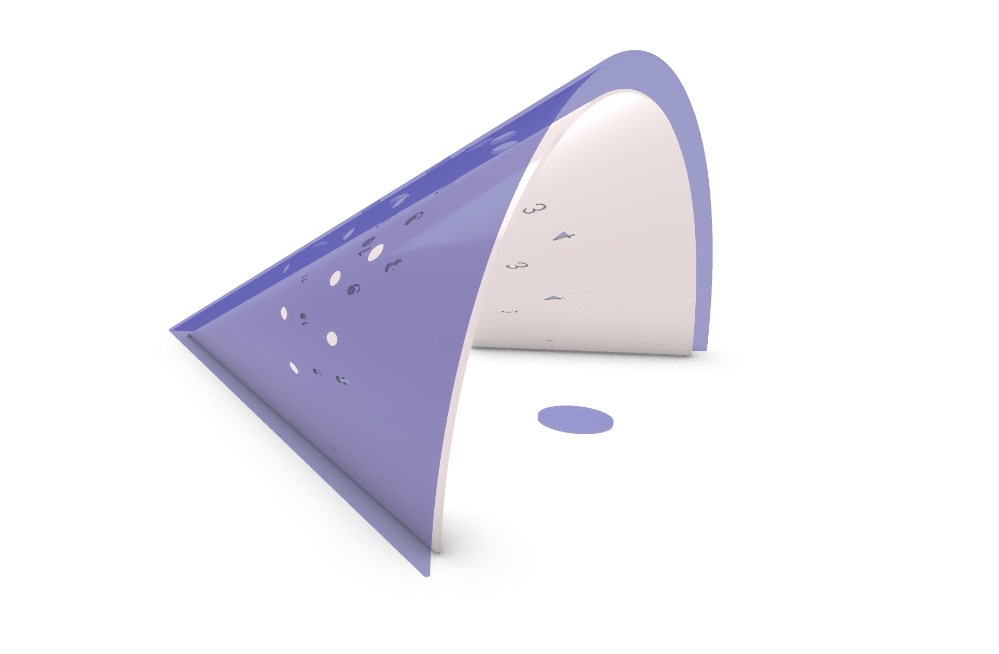
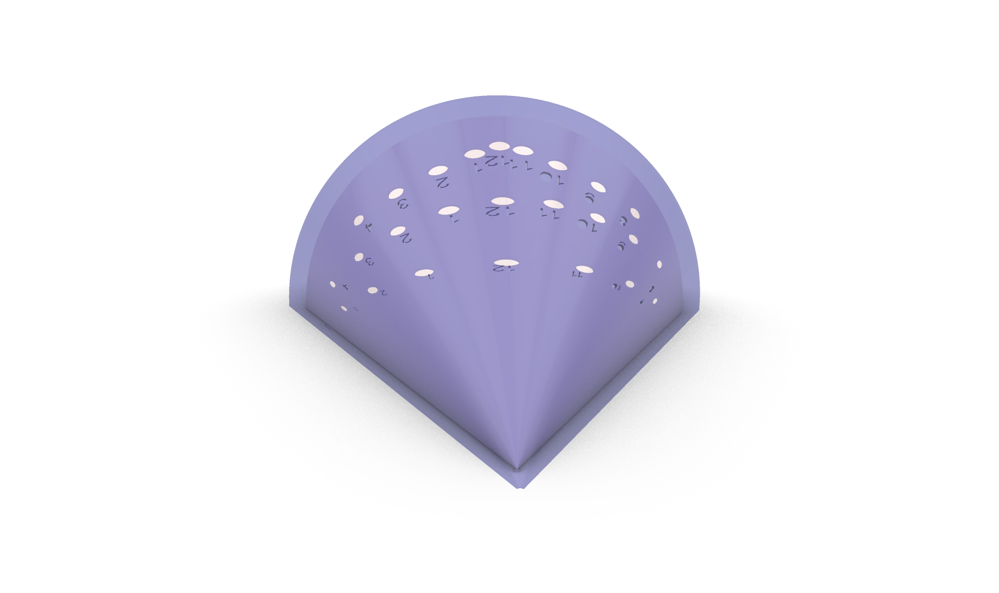
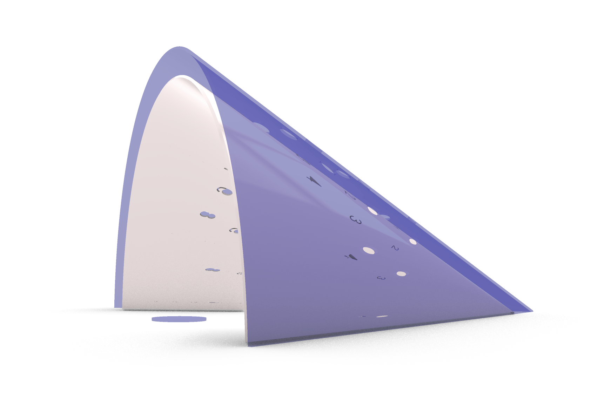
Community Solar Observation Pavilion
A single folded unit grows into a light-filtering shell that safely projects the eclipse for communal viewing.
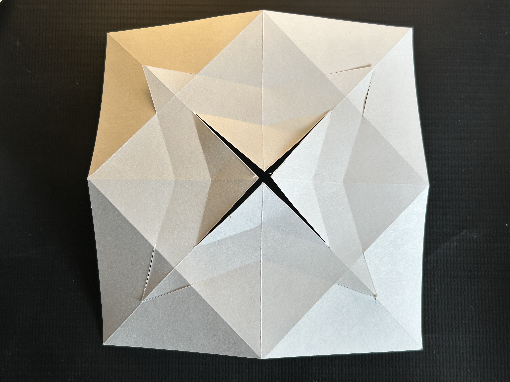
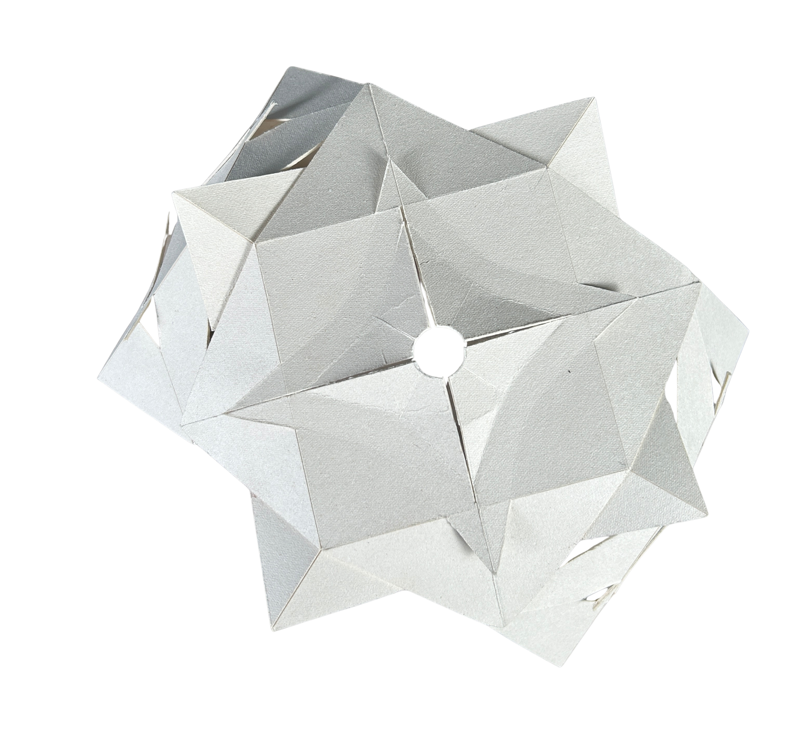
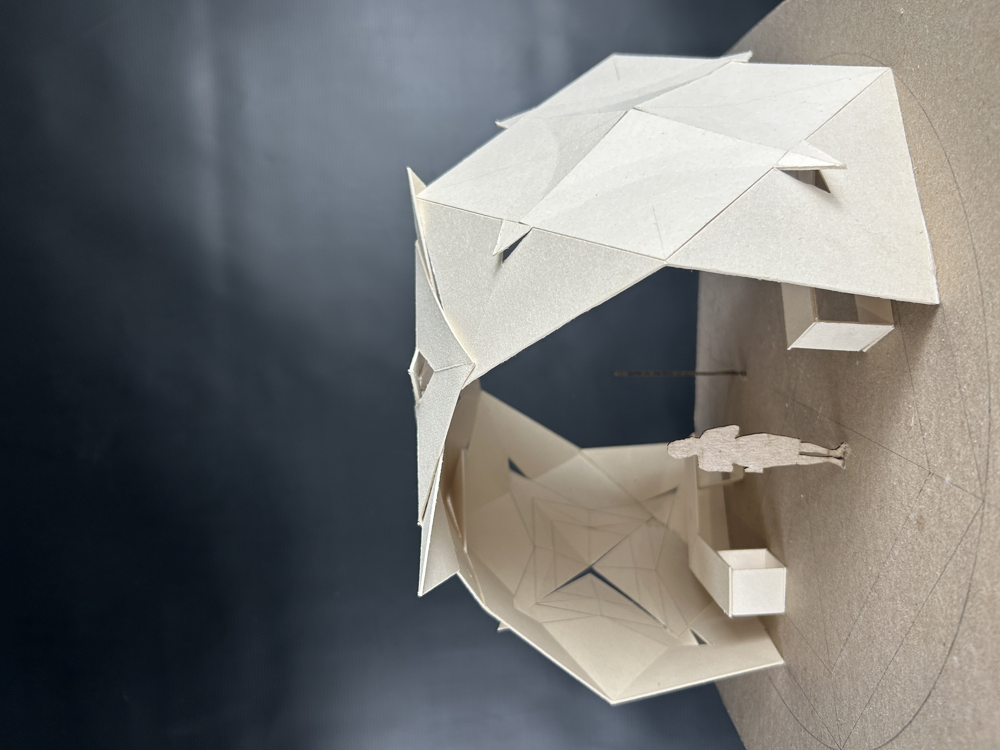
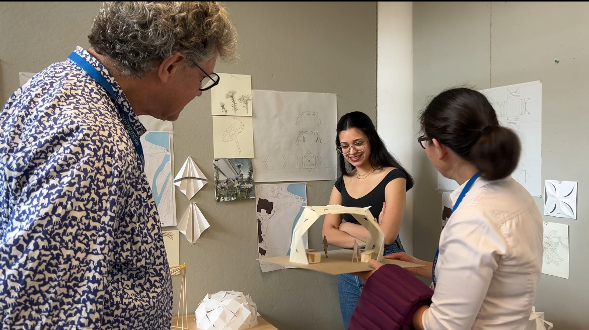
Final Project Critique
Presenting the pavilion’s unit aggregation and light-filtering strategy.